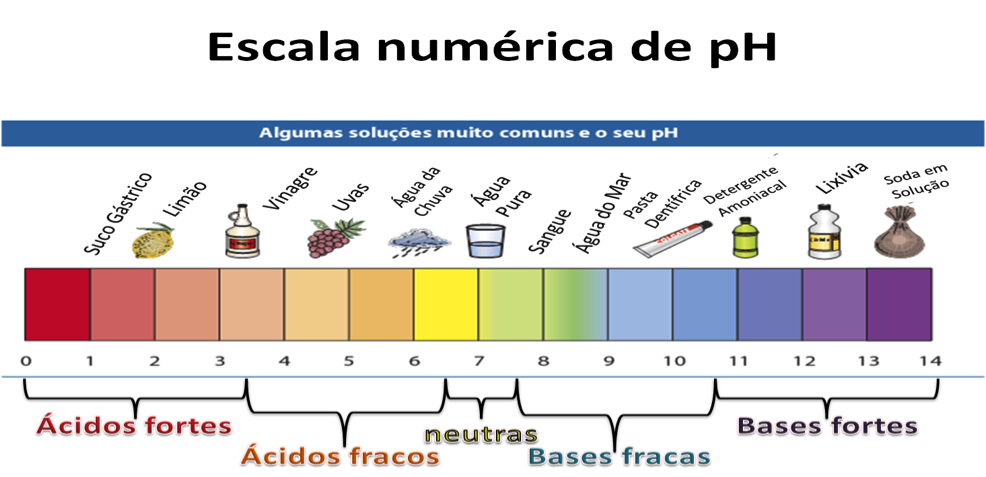
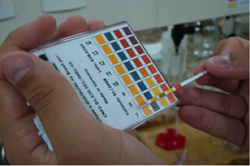
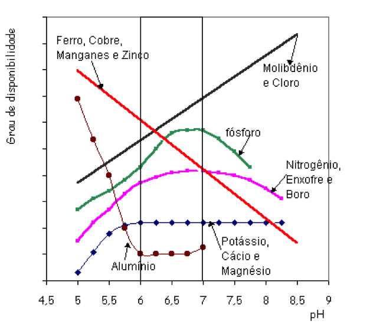

Você sabia que existem várias definições para ácidos e bases, das
quais a mais utilizada são as definições do químico, físico e
matemático sueco Svant August Arrhenius estudadas entre 1859-1927.
Para Arrhenius: ÁCIDOS - são substâncias que, em solução aquosa,
liberam íons positivos de hidrogênio (H+).
BASES – são
substâncias, que em solução aquosa, liberam de íons hidroxila (OH-)
Uma das características dos ácidos é o sabor azedo. Já as bases têm
sabor adstringente (como o do sabão).
Sobre as definições de ácidos e bases segundo outros pesquisadores
disponível em:
http://web.ccead.pucrio.br/condigital/video/conversa%20periodica/classificacaoNomenclatura/acidos/guiaDidatico.pdf
Para determinar se uma substância tem caráter ácido ou básico os químicos desenvolveram um parâmetro baseado na concentração dos íons H+ da solução do solo denominado de pH.
FINAL DO EFEITO:
Na prática, o pH é medido por meio de indicadores ácido-base (substâncias que mudam de cor em valores bem definidos de pH) ou de um potenciômetro (que mede a condutividade elétrica da solução e a relaciona com o pH). Tiras de pH Potenciômetro Fotos: http://tpmequipos.com.
Apesar da determinação através do potenciômetro ser mais preciso, o uso dos Indicadores é mais comum no cotidiano dos laboratórios de química, os quais dispõem de um grande número desses materiais, que mudam de cor nas mais diferentes faixas e/ou valores de pH.
O pH do solo exerce importante influência na produtividade das plantas por interferir na disponibilidade dos nutrientes para as mesmas. Importante lembrar: Nos solos ácidos os nutrientes não se encontram disponíveis para as plantas. Observe na figura abaixo que nos solos ácidos os nutrientes estão menos disponíveis para as plantas e que estes aumentam com o aumento do pH.
Para a correção da acidez do solo utiliza-se o calcário. E a prática de manejo que se utiliza o calcário chama-se calagem.
PARTICIPE DO FÓRUM ONDE DEBATEREMOS O SEGUINTE TEMA: “COMO ALIMENTAR UMA POPULAÇÃO EM CONSTANTE CRESCIMENTO SEM ESGOTAR OS RECURSOS NATURAIS DO SOLO”.
Agora, para aprofundar seus conhecimentos sobre a química no solo assista ao vídeo do link abaixo, descrevendo o procedimento para coleta de solos para analise de química do solo. Vídeo: https://www.youtube.com/watch?v=1J8iN9QBZ5E
Para uma melhor fixação do conteúdo estudado escreva o que você entendeu sobre a influencia do pH na absorção dos nutrientes pelas plantas.

Ácidos e bases: Definições de Arrhenius, Bronsted-Lowry e Lewis. acesso em 10 out 2014. Disponível em: http://educacao.uol.com.br/disciplinas/quimica/acidos-e-bases-definicoes-de-arrhenius-bronsted-lowry-e-lewis.htm
Responsável: Professora Nidia Barone
Universidade Federal do Ceará - Instituto UFC Virtual